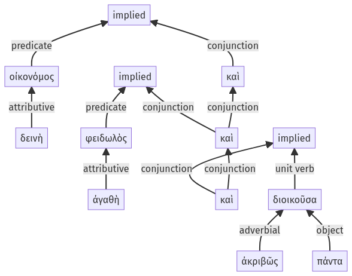

Lysias, 1.7.6-1.7.16a
1.6.65-1.7.5a | 1.7.17-1.7.29a
Sentence 13
1.7.6-1.7.16a
καὶ γὰρ οἰκονόμος δεινὴ καὶ φειδωλὸς ἀγαθὴ καὶ ἀκριβῶς πάντα διοικοῦσα:
1 καὶ οἰκονόμος δεινὴ
1 καὶ φειδωλὸς ἀγαθὴ
1 καὶ
2 ἀκριβῶς πάντα διοικοῦσα
καὶ γὰρ οἰκονόμος δεινὴ καὶ φειδωλὸς ἀγαθὴ καὶ ἀκριβῶς πάντα διοικοῦσα:
Highlighting:
- connecting words
- unit verb
- subject
- object
Color code:
- independent clause (level 1, linking verb)
- independent clause (level 1, linking verb)
- independent clause (level 1, linking verb)
- circumstantial participle (level 2, transitive verb)
